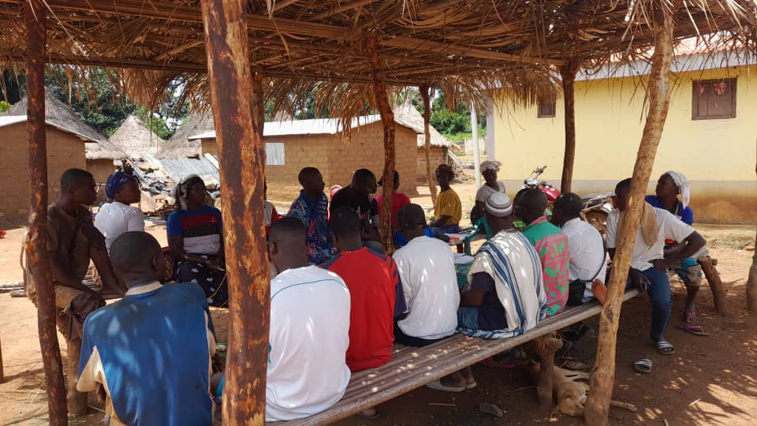
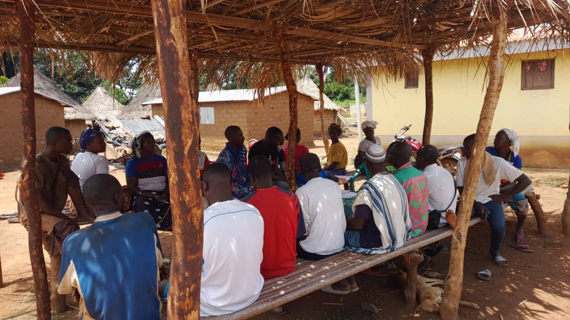

Nos Projets en Détail

Parcelle semencière — Projet riz
Ce projet vise à améliorer la production de riz dans le Bafing par la création d'une parcelle semencière de 8,5 ha. Les producteurs bénéficient d'un accompagnement technique, de semences de qualité et d'un suivi agronomique régulier. L'objectif est d'accroître les rendements, d'assurer la sécurité alimentaire et de valoriser le savoir-faire local.
- Formation intensive des producteurs locaux sur les techniques modernes de culture du riz
- Suivi de la qualité des semences et des pratiques culturales
- Appui logistique et matériel pour la préparation des sols
- Organisation de journées de démonstration et d'échanges entre agriculteurs
Financement : CBSS / Ministère de l'agriculture

Projet de culture maraîchère
Le projet de culture maraîchère permet de diversifier les productions agricoles et d'améliorer la sécurité alimentaire dans le Bafing. Il favorise l'accès à des légumes frais, la création d'emplois et le développement de filières locales. Les maraîchers bénéficient d'un accompagnement technique, de formations et d'un appui à la commercialisation.
- Appui technique et matériel pour la mise en place de parcelles maraîchères
- Formation sur l'irrigation, la gestion des ravageurs et la fertilisation naturelle
- Organisation de marchés locaux pour valoriser les produits maraîchers
- Suivi régulier et conseils personnalisés aux producteurs
Projet de formation avec les outils TIC
Ce projet vise à initier les jeunes et les acteurs ruraux aux outils numériques (TIC) pour renforcer leurs compétences et leur autonomie. Les formations portent sur l'informatique, l'utilisation des smartphones, la gestion numérique des activités agricoles et l'accès à l'information en ligne. L'objectif est de faciliter l'inclusion digitale et d'ouvrir de nouvelles perspectives professionnelles.
- Initiation à l’informatique, à Internet et aux outils bureautiques
- Utilisation des smartphones, applications agricoles et réseaux sociaux
- Appui à la gestion numérique des exploitations et à la commercialisation en ligne
- Organisation d’ateliers pratiques et de sessions de coaching

Sésame & soja biologique
Ce projet vise à promouvoir la culture du sésame et du soja biologique dans le Bafing, en partenariat avec UFAB et des opérateurs privés. Il permet d'améliorer la qualité des productions, d'accéder à des marchés spécialisés et de valoriser les filières locales. Les producteurs bénéficient d'un accompagnement technique, de formations et d'un appui à la certification bio.
- Accompagnement technique et suivi des parcelles de sésame et soja
- Organisation de sessions de formation sur l’agriculture biologique
- Appui à la certification bio et à la commercialisation
- Valorisation des filières locales et création de débouchés


Alphabétisation fonctionnelle
Ce projet a pour objectif de renforcer les compétences de base des producteurs et des membres de la communauté rurale. Les sessions d’alphabétisation sont adaptées au contexte local et permettent d’améliorer l’autonomie, la gestion des activités et la participation à la vie associative.
- Apprentissage de la lecture, de l’écriture et du calcul
- Formation adaptée aux besoins des adultes ruraux
- Suivi pédagogique personnalisé et évaluation des acquis
- Valorisation des savoirs locaux et de la langue maternelle
Groupements d'épargne
Ce projet accompagne la création et le développement de groupements d’épargne villageois. Il favorise l’autonomie financière, la solidarité et l’investissement communautaire. Les membres bénéficient de formations à la gestion, d’un appui à la constitution de caisses et d’un suivi régulier.
- Constitution de caisses villageoises et gestion collective des fonds
- Formation à la gestion financière, à l’épargne et au crédit solidaire
- Appui à l’investissement dans des projets locaux
- Organisation de rencontres et d’échanges entre groupements


Formation des leaders locaux
Ce projet vise à renforcer les capacités des comités villageois et à former des leaders locaux pour une gouvernance efficace et durable. Les participants sont accompagnés dans le développement de compétences en leadership, gestion de projet et prise de décision collective.
- Sessions de formation en leadership, gestion et communication
- Appui à la prise de décision communautaire et à la résolution de conflits
- Encadrement des initiatives locales et suivi des projets
- Valorisation des talents et des compétences locales
Zero sans papier
Ce projet consiste à mettre en place un système de gestion documentaire administratif pour faciliter l’accès aux droits civiques. Les actes de naissance et autres documents sont numérisés, les familles accompagnées et les agents locaux formés à la gestion numérique.
- Numérisation des documents administratifs et archivage sécurisé
- Accompagnement des familles dans les démarches administratives
- Formation des agents locaux à la gestion numérique
- Organisation de campagnes d’information et de sensibilisation

Conflits agriculteurs & éleveurs
Ce projet vise à prévenir et résoudre les conflits entre agriculteurs et éleveurs pour une cohabitation pacifique et durable. Il s’appuie sur la médiation, le dialogue communautaire et l’accompagnement des parties prenantes pour garantir la stabilité sociale et le développement local.
- Organisation d’ateliers de dialogue et de médiation communautaire
- Accompagnement des parties prenantes dans la résolution des conflits
- Suivi des accords locaux et évaluation de leur impact
- Valorisation des bonnes pratiques de cohabitation

Élevage durable
Ce projet vise à promouvoir des pratiques d'élevage durables et respectueuses de l'environnement. Il s'appuie sur la formation des éleveurs, l'amélioration des infrastructures et la valorisation des ressources locales.
- Formation des éleveurs aux pratiques d'élevage durable
- Amélioration des infrastructures d'élevage
- Valorisation des ressources locales pour l'alimentation animale
- Suivi et évaluation des pratiques d'élevage
 
